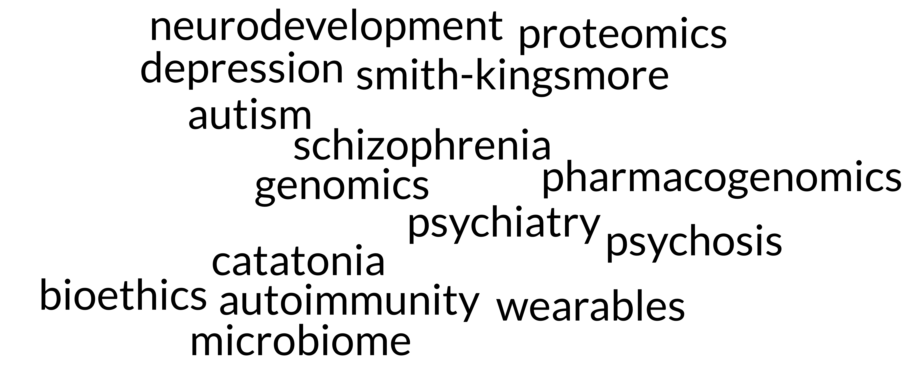
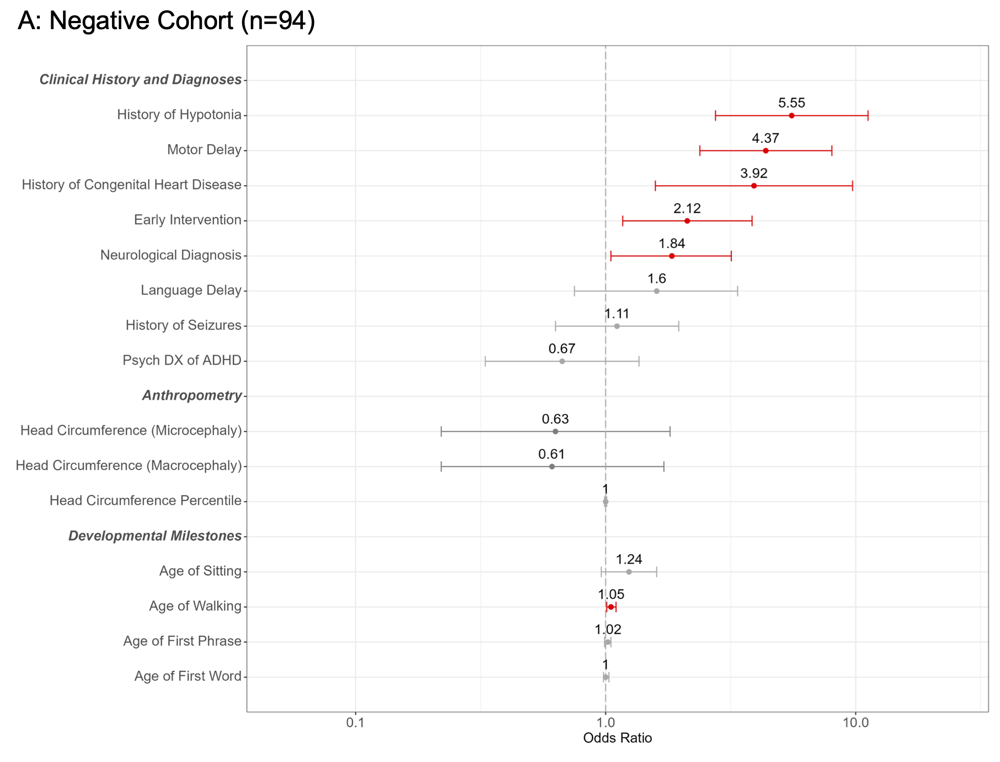
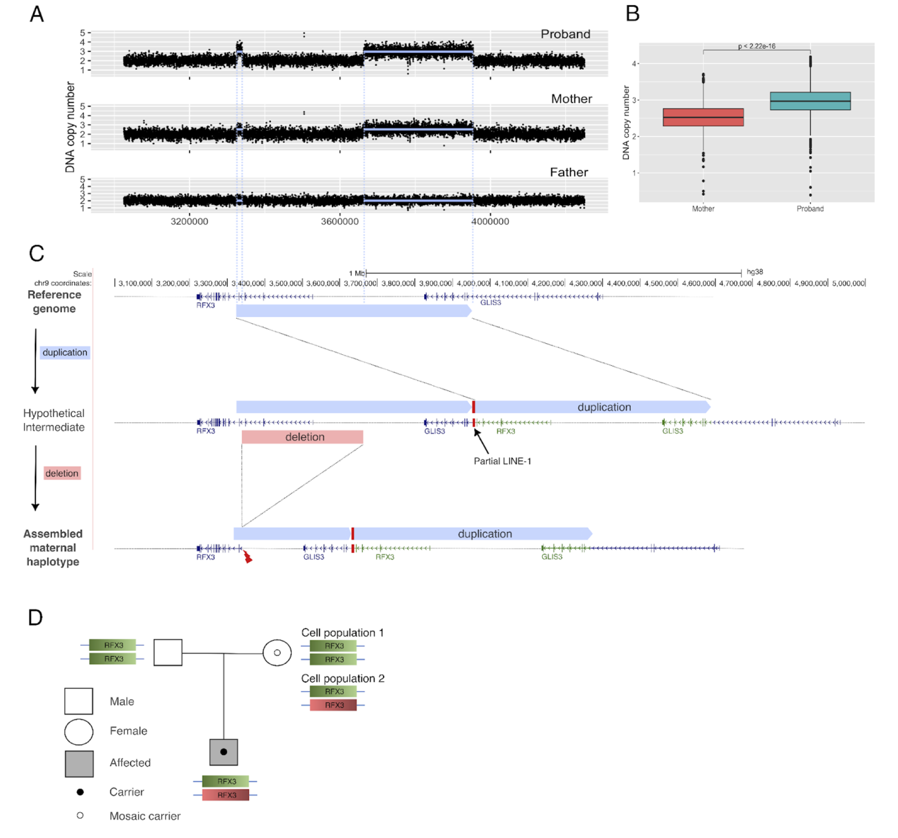
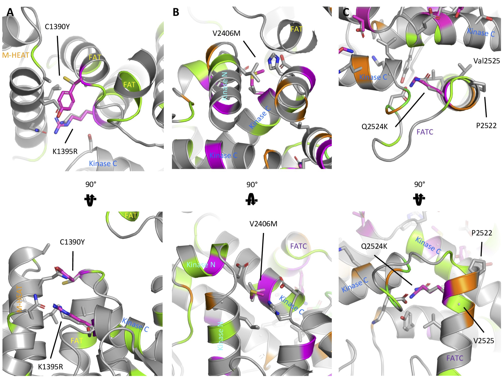
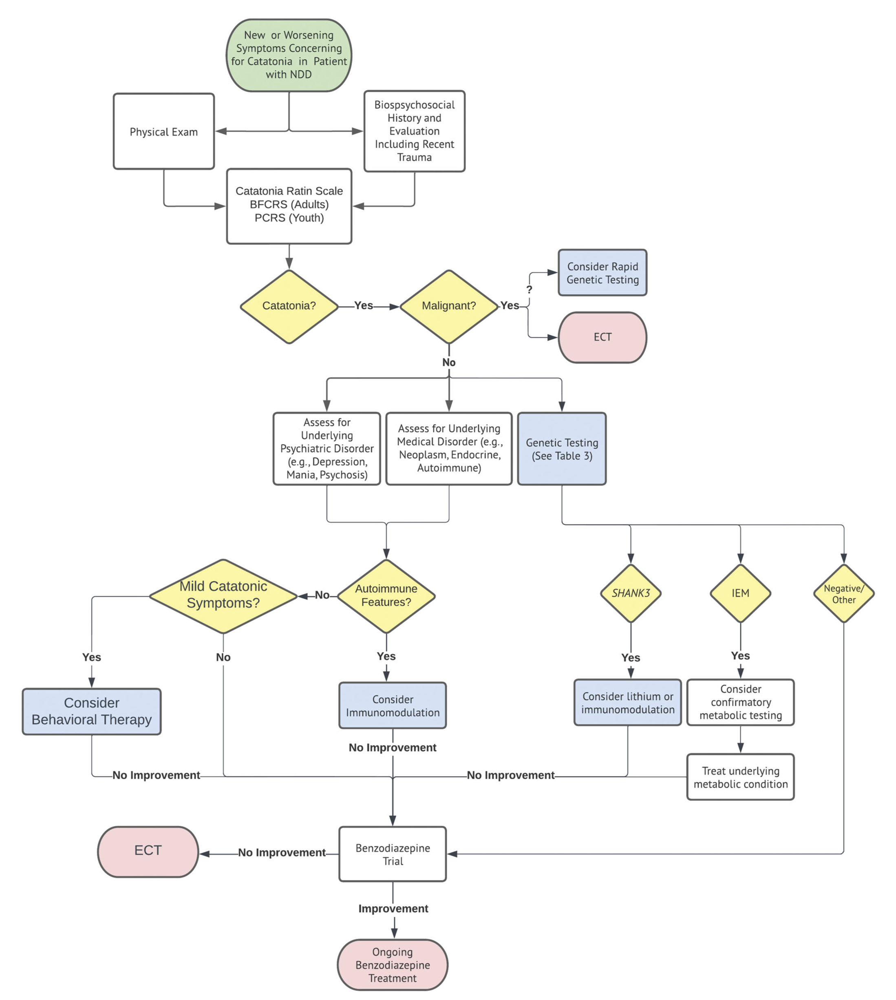
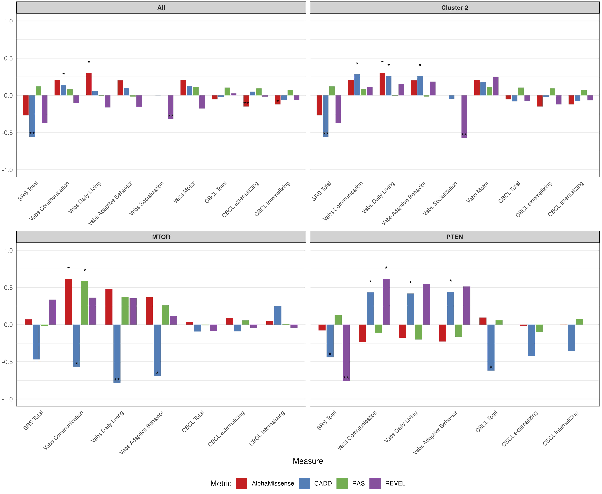

Besterman Lab
Pediatric Precision Psychiatry | Clinical & Translational Genomics | Multi-Omics






We push the boundaries of genomic science and leverage emerging technologies to transform our understanding and treatment of severe pediatric mental health disorders